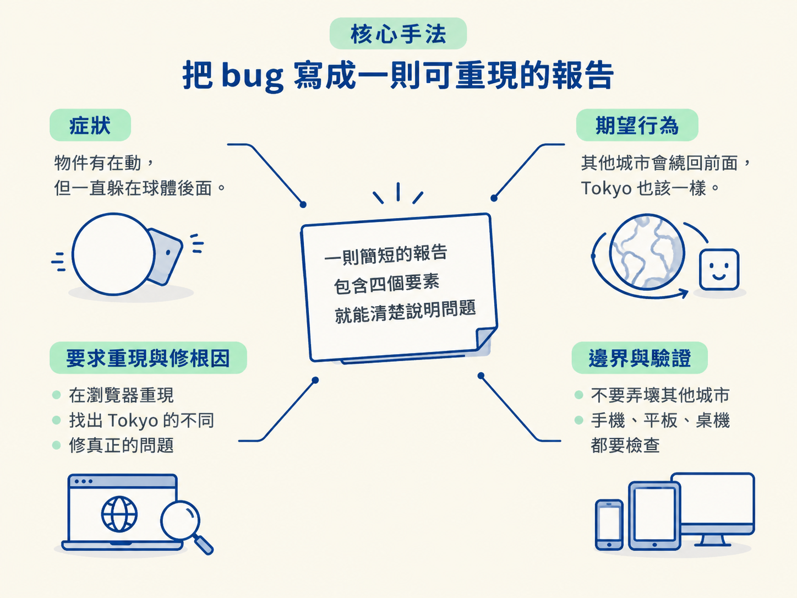
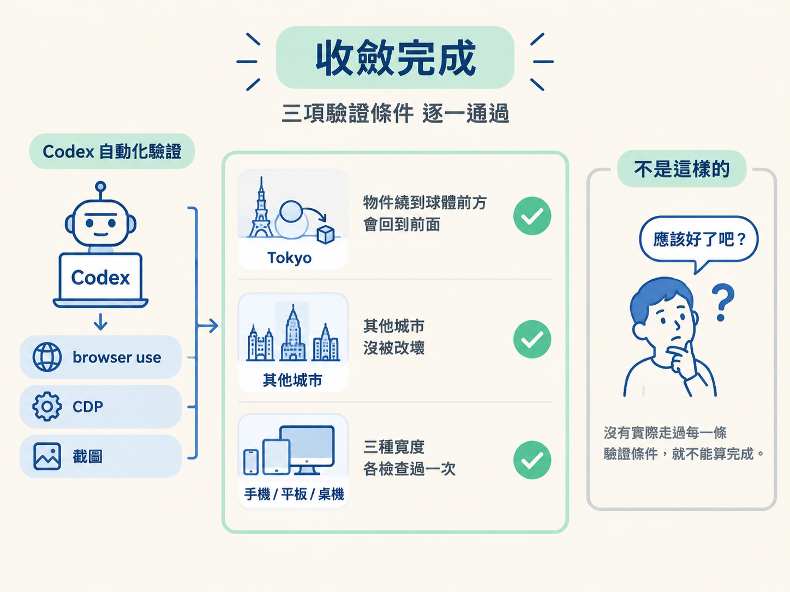

前兩節把除錯迴圈的形狀講完了，Codex 有哪些工具你也知道了。但知道形狀，不等於跑過一次。很多人卡在這裡：打開 Codex，打了一句「Tokyo 那裡怪怪的，幫我修」，然後開始猜它到底在做什麼、要不要插話、修完算不算好。
這一節就是把這條路走完一遍。做完你會得到兩樣東西：一則可以重複使用的除錯 prompt，以及送出之後「該看它做什麼、什麼時候閉嘴」的判斷。
動手前先確認兩件事：
pnpm install）把依賴裝好。依賴沒裝，連重現都談不上。前置沒備齊，後面每一步都會卡住。
整件事的重點只有一個：學會寫一則好的 bug 報告。好消息是你不需要寫得很細。講者說得很明白，「你不需要那麼詳盡」，核心只是把你的觀察忠實講出來。她示範的那則報告長這樣，你可以直接照著骨架改：
Can you take a look at the Tokyo section in A Year in a Day?
The objects are moving, but they stay behind the globe the whole time. In the other cities, they come back in front as they move around it, which is what I want for Tokyo too.
Please reproduce it in the browser, figure out what’s different about Tokyo, and fix the actual issue without breaking the other cities. Check it on mobile, tablet, and desktop when you’re done.短短三句話，就把一則報告該有的東西放齊了。拆開來看，它交代了四件事：
| 要素 | 這則報告怎麼寫 |
|---|---|
| 症狀 | 物件有在動，但一直躲在球體後面 |
| 期望行為 | 其他城市會繞回前面，Tokyo 也該一樣 |
| 要求重現與修根因 | 「在瀏覽器重現」「找出 Tokyo 的不同」「修真正的問題」 |
| 邊界與驗證 | 「不要弄壞其他城市」「手機、平板、桌機都要檢查」 |

最後兩句特別值得學。限制範圍那句（修 Tokyo 不可以把其他城市弄壞）是在告訴它「別用會波及全域的廉價改法」。驗證條件那句（明確點出三種裝置都要檢查）把「完成」定義成一個可執行的檢查，而不是「編譯過了」。這兩句一放，Codex 就不容易用一個討巧但脆弱的補丁交差。
跑動期間，除非它明顯卡住或走偏，否則別急著補一句「還是不對」。它才剛開始用工具查，你太快打斷，反而把它從診斷拉回去猜。先讓它完成一輪，再看結果決定要不要 steer。
如果你覺得上面那則英文範例太正式，用中文、講得更口語一樣可行，骨架不變就好：
Tokyo 的物件一直躲在球體後面，其他城市都會繞回前面。
請在瀏覽器裡重現，找出 Tokyo 和別的城市差在哪裡，修掉根本原因，
不要弄壞其他城市，最後在手機、平板、桌機各確認一次。換成中文之後，四要素依然都在：症狀、期望、要求重現與修根因、邊界與驗證。這就是它可重複的地方：你不必背英文句子，只要把這四格填滿。
這一輪跑完，你會看到一個可以驗證的結果，而不是一個「應該好了吧」：
這就是除錯迴圈收斂的樣貌，不是「我覺得好像好了」，而是每一條驗證條件都被走過一遍。原理的部分（browser use 怎麼運作、CDP 能查到什麼）在前面兩節，這裡只要能跑完一輪就好。

跑一次除錯迴圈的關鍵，是寫出一則含四要素的報告：症狀、期望行為、要求重現與修根因、以及邊界與驗證條件。前置是專案能跑、bug 能穩定重現。送出後讓 Codex 用 browser use、CDP 與截圖自己跑完一輪，別急著中途打斷；它會先跑 build，所以回報完成時通常真的能跑。
到這裡你已經能跑完整個迴圈了。但還剩下最後一個、也是最需要經驗的判斷：這一輪到底該不該由你盯著、什麼時候該插手說「不對」。下一節就把這條線畫出來。